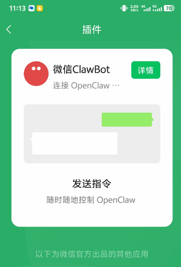
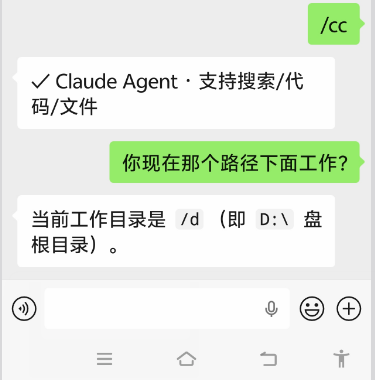

上个月去实验室的路上，我突然想到一个优化思路。分子对接重打分，构象可以一次性读取，缓存在内存里，不用每次迭代都从磁盘读。
当时离实验室还有15分钟。我要么在手机备忘录里草草记两笔（大概率后面忘了细节），要么干等到实验室坐下来再说。
这种感觉你一定也有过。通勤路上脑子里冒出一个方案，但没法立刻在电脑上试。等回到工位，那点心流早散了。
直到我把 Claude Code 接进了微信。
路上给微信机器人发条消息，Claude Code 在我实验室的电脑上跑了起来。到站的时候，代码改好了，测试也在跑。
之前我的工作流是这样：学生在微信发消息 → 我找地方打开电脑 → 改代码 → 跑测试 → 把结果截图发回微信。来回倒腾，费时间不说，思路也断得七零八落。
花了一下午把 Claude Code 接进微信之后，流程变成了这样：学生在微信找我 → 我把问题转发给机器人号 → Claude Code 在实验室电脑上自己跑 → 改好了、跑通了，结果直接发回我微信。
这篇文章聊聊怎么把这套东西搭起来。
先点个关注吧！
微信没有官方安装包，但有官方协议
先明确一点：微信官方没出过"Claude Code for WeChat"这样的安装包。以后大概率也不会有。
但 2026 年 3 月，微信推出了 ClawBot 插件，底层是 iLink 协议。这是腾讯自己开放的 Bot API，说白了就是给你的程序开了条合法通道。服务器域名 ilinkai.weixin.qq.com，跑在腾讯自家机房里。
原理很简单：你在电脑上跑程序，终端弹出一个二维码。拿微信扫一下，号就跟程序绑定了。之后别人给你这个号发消息，程序通过长轮询收到、通过 API 回复。全程官方通道，不用担心封号——腾讯在《微信 ClawBot 功能使用条款》里给这事背了书。
这个功能还在灰度阶段。不是所有人都能在"我→设置→插件"看到。没看到的，把微信更到最新版，过几天再刷刷。

不过有协议是一回事，能直接用是另一回事。iLink 给的是 HTTP 接口，写给开发者的。你需要一个中间层来做这三件事：收微信消息、丢给 Claude Code、把回复发回去。
方案怎么选？一个表格说清楚
微信连接 Claude Code，社区里主要有三个方案：
我选 wechat-ai。原因很简单：官方协议，不封号。而且它不光能接 Claude Code，还内置了 DeepSeek、通义千问、GPT、Gemini 等 8 个模型，加上 OpenRouter 能扩展到 300+。所有模型都有 Agent 能力——搜索网页、读写文件、执行代码。一条命令装好就能用。
wechat-ai：在你微信和电脑之间搭桥
wechat-ai 这个开源项目在 GitHub 上，做的事情说白了就三步：
通过 iLink 协议长轮询收微信消息 把消息丢给本地的 Claude Code 处理 把回复通过 iLink 协议发回微信
部署不需要多高深的技术。有一台能常开的电脑，装好 Node.js 和 Claude Code，跑几条命令就搞定。打开一个终端，输入：
第一次启动终端弹出一个二维码。用你想当"机器人"的微信号扫码，登录凭证保存在本地。之后从另一个微信号给这个机器人号发消息，Claude Code 就能收到并处理了。
配 API Key 很简单：
换成 Claude 原生模型也行：wechat-ai set claude "sk-你的密钥"。
配完就能在微信里给 AI 派活了。
微信里的指令
进了微信，对话栏就是控制台。几个最常用的：
/cc —— 切到 Claude Code 模式，处理复杂代码任务
/model deepseek —— 切模型，国产模型便宜，日常任务够用
/model —— 看看当前用的什么模型
/skill —— 切预设角色（程序员、翻译、写手）
/help —— 查全部指令
/ping —— 看看服务还在不在
发图片它会自动切视觉模型分析。发语音它能转文字后处理。想画图的话，/画 分子对接示意图 就行。

搞清楚一个关键区别
很多人听到"微信接入 Claude Code"，脑子里第一反应是"我在微信里有了一个 AI 机器人"。
不对。更准确的说法是：你在微信里，多了一个远程入口，去调你本地那台机器上已经配好的 Claude Code。
你在微信里发"帮我查下上周的实验数据，看看 RMSD 值有没有异常"，它到你电脑上跑 CC，跑完把结果发回微信。这跟你坐在电脑前打开终端跑 CC 没本质区别。唯一的区别是——你不用坐在电脑前了。
所以它的价值不是能聊天，是能远程继续干活。
三个真实场景
场景一：通勤路上修 bug
早上去实验室的路上，学生发微信说分子动力学那个脚本报错了，KeyError: 'force_field_type'。
我把错误信息转给机器人号，加了句"看看怎么回事"。
Claude Code 读了项目里的配置文件，发现是输入 PDB 文件缺了力场类型的元数据行。它直接在 prepare_input.py 里加了兼容逻辑，对缺字段的情况做了默认值处理。改完跑了一遍测试，通过。
到实验室打开电脑，代码改好了，commit message 都写好了，PR 提了。学生说"你动作好快"。我没好意思说是在路上改的。
场景二：随时写文档
有次在外面吃饭，大老板突然说下周要我总结一下项目进展，最好有个文字总结。
手机上打字写文档？想想就绝望。
我在微信里给 Claude Code 发了句话："去我的 notes 目录里找相关的实验记录，整理成一份进展报告，结构包括：已完成测试、关键发现、遇到的问题、下一步计划。"
吃完饭回去打开电脑，文档已经写了 80%。补了点细节直接交。
场景三：远程审批权限
Claude Code 执行过程中需要干活——比如安装新依赖、写文件、跑测试——会发权限请求到微信。
回个 y 就放行，回 n 就拦下。不用担心 AI 在你电脑上搞事情。
这个比之前用 Computer Use 靠谱。Computer Use 只能在你看着的时候用，不能静默跑，还吃网络、吃资源。微信这条通道轻量得多。
几个要注意的
用了一周多，说些实话。
先说适用边界：这个组合不适合实时交互场景。发消息→处理→返回，中间有延时，不是秒回。也不适合需要图形界面的操作。但对于写代码、整理数据、写文章、查资料这类"异步处理"的事——这是我用过最顺手的工具链。
具体注意：
不支持微信群：目前只能单聊，群里 @ 它没反应。群聊功能开发中。 Windows 终端可能乱码：PowerShell 下二维码有时候显示不正常。用 Windows Terminal 好很多。 登录会过期：微信的登录状态有有效期。隔段时间要重新扫码。 设好工作目录：提前把 Claude Code 的 work_dir 指到你常干活的项目目录，省得每次远程还得先 cd。 别给它删文件的权限：操作范围自己控制好。我只让它读写特定目录，rm -rf 这种操作一概拒绝。 在线调试需要额外搞：有些效果你得在线上环境验证——比如改完前端想看效果。可以搭个在线环境让 CC 改完直接部署上去看。
整体来说，这些问题不致命，但动手之前知道一下比较好。
写在最后
之前有个说法："AI 是生产力工具，生产力的关键是让工具适应你的节奏，而不是你被工具绑在电脑前。"
微信接入 Claude Code，不是为了搞个聊天机器人。它解决的是一个更实在的问题：你不在电脑前的时候，AI 能不能继续帮你干活？
装起来只要 5 分钟。试试。
相关链接 ：
Github地址：https://github.com/anxiong2025/wechat-ai